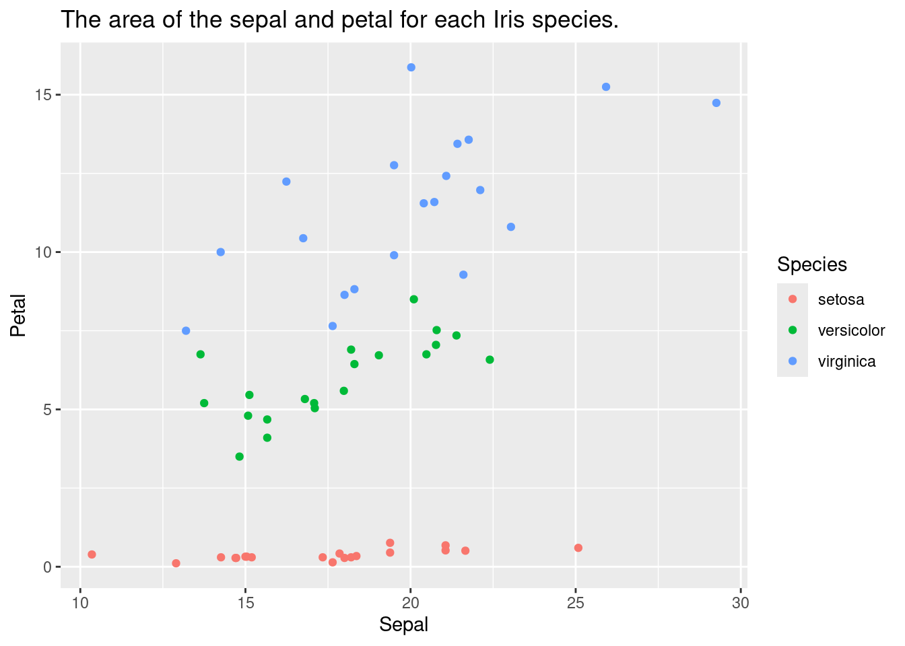
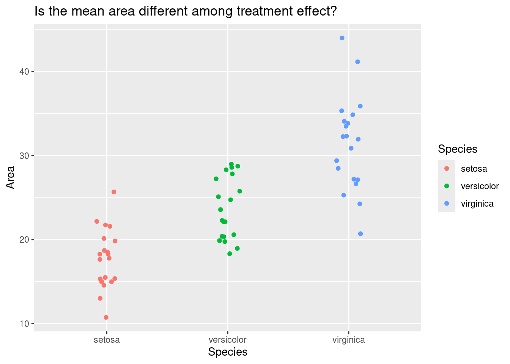
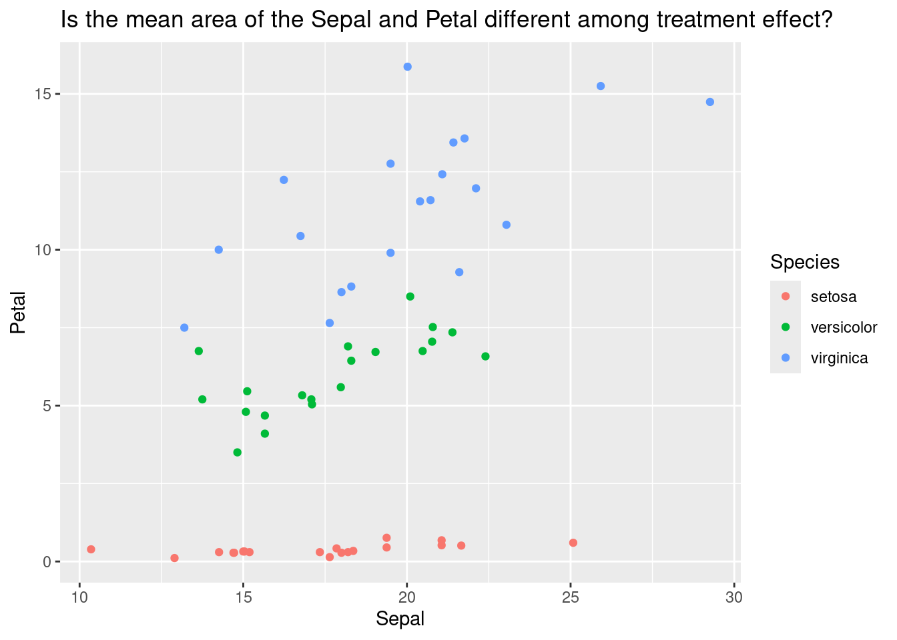

This data is a modified version from the iris dataset in R. I calculated the area of the Sepal and Petal for each Species (I. setosa, I. versicolor, and I. virginica), so that it appears similar to your fish gill-branch area data.
ggplot(dset) +geom_point(aes(x = Sepal, y = Petal, color = Species)) +labs(title ="The area of the sepal and petal for each Iris species.")

Traditional one-way ANOVA
In a simple one-way ANOVA, we first sum the area of the sepal and the petal.
d1 = dset |>mutate(Area = Sepal + Petal)
ggplot(d1) +geom_point(aes(x = Species, y = Area, color = Species),position =position_jitter(0.1)) +labs(title ="Is the mean area different among treatment effect?")

Then we test the null hypothesis that the mean value of the Area is similar across treatment effect (Species).
m1 =lm(Area ~ Species, data = d1)summary.aov(m1)
Df Sum Sq Mean Sq F value Pr(>F)
Species 2 1893 946.6 49.49 3.46e-13 ***
Residuals 57 1090 19.1
---
Signif. codes: 0 '***' 0.001 '**' 0.01 '*' 0.05 '.' 0.1 ' ' 1
At a significance level of 0.05, the results are significant. Next we could use a TukeyHSD test to test for post-hoc pair-wise differences in the mean area.
emmeans(m1, specs = pairwise ~ Species, type ="Tukey")
$emmeans
Species emmean SE df lower.CL upper.CL
setosa 17.7 0.978 57 15.8 19.7
versicolor 23.7 0.978 57 21.7 25.6
virginica 31.5 0.978 57 29.5 33.4
Confidence level used: 0.95
$contrasts
contrast estimate SE df t.ratio p.value
setosa - versicolor -5.94 1.38 57 -4.297 0.0002
setosa - virginica -13.72 1.38 57 -9.920 <.0001
versicolor - virginica -7.78 1.38 57 -5.623 <.0001
P value adjustment: tukey method for comparing a family of 3 estimates
If we look a the $contrast output, we can see that the difference are significant among all pair-wise comparisons.
Multivariate ANOVA (MANOVA)
My preferred method for this type of data, where there are multiple dependent variables for each sample, would be a multivariate ANOVA. In this case, Sepal and Petal are multiple observations for each sample (i.e., dependent variable) and the Species is the independent variable.
ggplot(d1) +geom_point(aes(x = Sepal, y = Petal, color = Species)) +labs(title ="Is the mean area of the Sepal and Petal different among treatment effect?")

Here, we test the hypothesis that the mean area of the Sepal and Petal are similar across treatment effect (Species).
m2 =lm(cbind(Sepal, Petal) ~ Species, data = d1)manova_result =manova(m2)summary(manova_result, test ="Pillai")
Df Pillai approx F num Df den Df Pr(>F)
Species 2 0.93905 25.225 4 114 5.616e-15 ***
Residuals 57
---
Signif. codes: 0 '***' 0.001 '**' 0.01 '*' 0.05 '.' 0.1 ' ' 1
According to the Pillai statistic, the null hypothesis can be rejected at the 0.05 significance level.
emmeans(manova_result, specs = pairwise ~ Species, type ="Tukey")
$emmeans
Species emmean SE df lower.CL upper.CL
setosa 8.87 0.489 57 7.89 9.85
versicolor 11.84 0.489 57 10.86 12.82
virginica 15.73 0.489 57 14.75 16.71
Results are averaged over the levels of: rep.meas
Confidence level used: 0.95
$contrasts
contrast estimate SE df t.ratio p.value
setosa - versicolor -2.97 0.691 57 -4.297 0.0002
setosa - virginica -6.86 0.691 57 -9.920 <.0001
versicolor - virginica -3.89 0.691 57 -5.623 <.0001
Results are averaged over the levels of: rep.meas
P value adjustment: tukey method for comparing a family of 3 estimates
The TukeyHSD test also indicates significant difference in pair-wise comparisons.
One-way ANOVA with a random effect
Random effect models are very tricky. Please read Ben Bolker’s FAQ on GLMMs, which deals with random effect models. Especially read the discussion regardin “Should I treat factor xxx as fixed or random?”
In this case the fixed effect is Species and the random effect is Organ. In your fish data, the fixed effect would be the treatment and the random effect would be gill arch #.
The null hypothesis for the fixed effect is similar to that of the simple ANOVA.
m3 =lmer(Area ~ Species +(1| Organ), data = dset2)summary(m3)
Linear mixed model fit by REML. t-tests use Satterthwaite's method [
lmerModLmerTest]
Formula: Area ~ Species + (1 | Organ)
Data: dset2
REML criterion at convergence: 614.6
Scaled residuals:
Min 1Q Median 3Q Max
-2.8110 -0.7234 -0.1117 0.6615 3.2182
Random effects:
Groups Name Variance Std.Dev.
Organ (Intercept) 77.25 8.789
Residual 9.66 3.108
Number of obs: 120, groups: Organ, 2
Fixed effects:
Estimate Std. Error df t value Pr(>|t|)
(Intercept) 8.869 6.234 1.008 1.423 0.389
Speciesversicolor 2.971 0.695 116.000 4.275 3.94e-05 ***
Speciesvirginica 6.859 0.695 116.000 9.870 < 2e-16 ***
---
Signif. codes: 0 '***' 0.001 '**' 0.01 '*' 0.05 '.' 0.1 ' ' 1
Correlation of Fixed Effects:
(Intr) Spcsvrs
Specsvrsclr -0.056
Specisvrgnc -0.056 0.500
Note there is output for randome effect, fixed effect, and the correlation among fixed effects. The P-values for the random effects model is provided below and indicates that null hypothesis can be rejected.
anova(m3)
Type III Analysis of Variance Table with Satterthwaite's method
Sum Sq Mean Sq NumDF DenDF F value Pr(>F)
Species 946.59 473.29 2 116 48.995 3.766e-16 ***
---
Signif. codes: 0 '***' 0.001 '**' 0.01 '*' 0.05 '.' 0.1 ' ' 1
The TukeyHSD test also indicates significant difference in pair-wise comparisons.
emmeans(m3, specs = pairwise ~ Species, type ="Tukey")
$emmeans
Species emmean SE df lower.CL upper.CL
setosa 8.87 6.23 1.01 -68.8 86.6
versicolor 11.84 6.23 1.01 -65.8 89.5
virginica 15.73 6.23 1.01 -62.0 93.4
Degrees-of-freedom method: kenward-roger
Confidence level used: 0.95
$contrasts
contrast estimate SE df t.ratio p.value
setosa - versicolor -2.97 0.695 116 -4.275 0.0001
setosa - virginica -6.86 0.695 116 -9.870 <.0001
versicolor - virginica -3.89 0.695 116 -5.594 <.0001
Degrees-of-freedom method: kenward-roger
P value adjustment: tukey method for comparing a family of 3 estimates